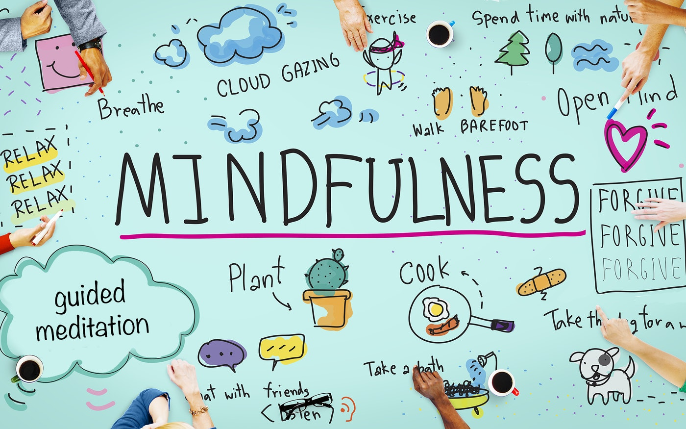

What is Mindfullness?

"Mindfulness is about understanding yourself and being "in the moment", starting from simple things as having a coffe in the morning and actually appreciate that coffee in that precise moment."
(See 8 Mindfulness habits)
Mindfulness is the basic human ability to be fully present, aware of where we are and what we’re doing, and not overly reactive or overwhelmed by what’s going on around us. While mindfulness is something we all naturally possess, it’s more readily available to us when we practice on a daily basis. Whenever you bring awareness to what you’re directly experiencing via your senses, or to your state of mind via your thoughts and emotions, you’re being mindful. Through being mindful, we learn that small things can have a big effect. Becoming aware of our bodies, our emotional life, our communication with others, helps us to live a life that flows into a rich tapestry of awareness, imbued with beauty and appreciation.
"Mindfulness is available to us in every moment, whether through meditations and body scans, or mindful moment practices like taking time to pause and breathe when the phone rings instead of rushing to answer it."
...the awareness that arises through paying attention on purpose in the present moment non-judmentally...
Jon Kabat
How do i practice Mindfulness?
Simple mindfulness exercises can be practiced anywhere and anytime, when we’re on the bus, when we’re waiting in the queue at the shop, while we’re eating. Research indicates that engaging your senses outdoors is especially
beneficial.
There are many simple ways to practice mindfulness. Some examples include:
- Pay attention. It's hard to slow down and notice things in a busy world. Try to take the time to experience your environment with all of your senses — touch, sound, sight, smell and taste. For example, when you eat a favorite food, take the time to smell, taste and truly enjoy it.
- Live in the moment. Try to intentionally bring an open, accepting and discerning attention to everything you do. Find joy in simple pleasures
- Acept yourself. Treat yourself the way you would treat a good friend.
- Focus on breathing. When you have negative thoughts, try to sit down, take a deep breath and close your eyes. Focus on your breath as it moves in and out of your body. Sitting and breathing for even just a minute can help.
You can also try more structured mindfulness exercises that involve meditation, such as:
-
Body scan meditation. Lie on your back with your legs extended and arms at your sides, palms facing up. Focus your attention slowly and deliberately on each part of your body, in order, from toe to head or head to toe. Be
aware of any sensations, emotions or thoughts associated with each part of your body.
- 15min practice
Mindfulness Meditation Scan -
Sitting meditation. Sit comfortably with your back straight, feet flat on the floor and hands in your lap. Breathing through your nose, focus on your breath moving in and out of your body. If physical sensations or
thoughts interrupt your meditation, note the experience and then return your focus to your breath.
- 10min practice
Daily Mindfulness Meditation
-
Walking meditation. Find a quiet place 10 to 20 feet in length, and begin to walk slowly. Focus on the experience of walking, being aware of the sensations of standing and the subtle movements that keep your balance. When
you reach the end of your path, turn and continue walking, maintaining awareness of your sensations.
- 15min practice
Walking Mindfulness Meditation
...Get a better grasp of what mindfulness is about!
5 min long video
Benefits of mindfulness
-
Mindfulness improves well-being. Increasing your capacity for mindfulness supports many attitudes that contribute to a satisfied life.
Being mindful makes it easier to savor the pleasures in life as they occur, helps you become fully engaged in activities, and creates a greater capacity to deal with adverse events.
By focusing on the here and now, many people who practice mindfulness find that they are less likely to get caught up in worries about the future or regrets over the past, are less preoccupied with concerns about success and self-esteem, and are better able to form deep connections with others. -
Mindfulness improves physical health. If greater well-being isn’t enough of an incentive, scientists have discovered that mindfulness techniques help improve physical health in a number of ways.
Mindfulness can: help relieve stress, treat heart disease, lower blood pressure, reduce chronic pain, , improve sleep, and alleviate gastrointestinal difficulties. - Mindfulness improves mental health. In recent years, psychotherapists have turned to mindfulness meditation as an important element in the treatment of a number of problems, including: depression, substance abuse, eating disorders, couples’ conflicts, anxiety disorders, and obsessive-compulsive disorder.